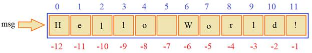
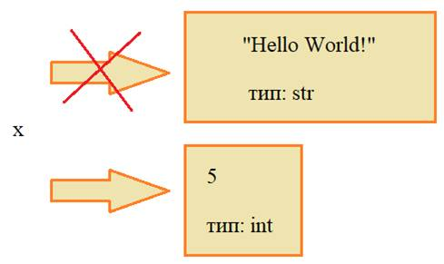
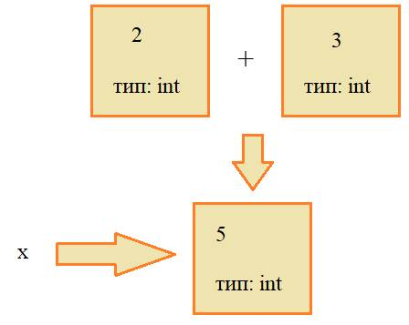
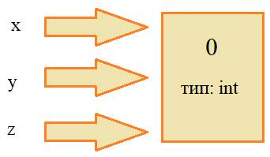

Это занятие начнем с рассмотрения структуры программы на Python и зададимся вопросом: что из себя представляет простейшая программа? В действительности – это пустой текстовый файл. Да, мы можем запустить такую программу, она исполнится, но ничего не произойдет. Немного усложним ее и напишем, например, просто
это тоже допустимо и программа тоже сработает. Далее, если добавим круглые скобки:
то эта функция будет вызвана и в консоли напечатается пустая строка, то есть, символ перевода на новую строку. Запишем в круглых скобках кавычки:
программа сработает аналогичным образом – выведется пустая строка. Ну а если написать строку:
то в консоль выведется это сообщение. Все эти примеры показывают гибкость и дружелюбие интерпретатора языка Python по отношению к программисту. Но есть и определенные ограничения, например, начальные конструкции всегда должны начинаться с самого начала строки, то есть, ставить пробел перед print нельзя. Например, вот так:
работать не будет. Также обязательной является пустая строка в конце текстового файла с программой. Если мы в редакторе ее не напишем, то при сохранении, она будет добавлена автоматически. Допускается множество пустых строк, но одна должна быть обязательно.
Далее, в каждой более-менее состоятельной программе имеются комментарии – это текст, который видит программист, но игнорируемый интерпретатором языка. Чтобы поставить комментарий, используется символ шарп (#), за которым следует текст комментария:
Переменные и их типы
Теперь, когда мы узнали как записывать простейшие программы, пришло время выяснить как Python хранит и представляет различные данные. То есть, поговорить о переменных и их типах.
Строго говоря, в Питоне нет переменных, в привычном смысле: когда переменная является именованным хранилищем данных. Здесь все устроено несколько иначе. Например, если записать вот такую строчку:
то x здесь имя ссылки, которая ссылается на "Hello World!". А сам "Hello World!" представляется в Python как объект, содержащий эту строку. Визуально это можно представить так:

То есть, оператор присваивания не копирует данные в переменную, он лишь возвращает ссылку на объект с данными и эта ссылка сохраняется в переменной x.
Почему переменная называется x? В общем-то не почему, просто этот символ пришел мне в голову и я его записал. Вы можете писать свои, другие имена переменных, главное, чтобы они соответствовали такому правилу:
- имя должно быть существительным (отвечать на вопрос: кто, что)
- в качестве первого символа допускается писать буквы латинского алфавита a-z, A-Z и символ подчеркивания _
- в качестве второго и последующих символов еще цифры 0-9
И, конечно же, имена ссылок следует делать осмысленными. Например, если мы храним сообщение, пусть она называется
если это какой-либо счетчик, то можно использовать имя
и так далее. Это упрощает понимание программы и облегчает процесс программирования.
Давайте теперь выведем значение нашей ссылки x, используя встроенную функцию
id(<ссылка>)
У объекта, на который ссылается x, есть тип данных. Его можно узнать вызвав функцию
type(<ссылка на объект>)
например, так:
и мы увидим в консоли сообщение:
<class 'str'>
которое говорит, что объект (класс) имеет тип str, то есть, содержит строку. Получается, что в любом объекте, помимо данных, хранится еще и тип данных:

Механизм переменных в виде ссылок на объекты имеет ряд преимуществ. Например, мы можем далее в программе присвоить ссылку x на любой другой объект, скажем, числовой:
В этом случае будет автоматически создан новый объект с числом 5 и типом int:

Если мы запустим программу, то увидим, что id у x меняется, что говорит об изменении ссылки на новый объект и тип данных теперь int.
А что происходит с объектом, на который теперь нет ссылок? Он автоматически уничтожается сборщиком мусора. В Python реализован алгоритм автоматического удаления данных, на которых нет внешних ссылок. Поэтому программист может совершенно не заботиться об освобождении памяти, занятой ранее каким-либо объектом. И это очень удобно. В частности, вот при таком присваивании:
сначала будет вычислено это выражение 2+3=5, на основе двух временных объектов (не именованных – на них нет ссылок), затем, сформируется новый объект со значением 5, а объекты 2 и 3 уничтожатся сборщиком мусора, т.к. на них нет внешних ссылок. В результате, x будет ссылаться на этот созданный объект со значением 5 и целочисленным типом int.

Каскадное присваивание
В Питоне существует, так называемое, каскадное присваивание, которое можно записать так:
В этом случае все три ссылки будут ссылаться на один и тот же объект. И это принципиальное отличие, например, от языка С++, когда в эти переменные просто записался бы 0. Здесь никакого копирования не происходит, а всего лишь именованные ссылки x, y, z ссылаются на один и тот же объект со значением 0.

Множественное присваивание
Если нам необходимо каждой ссылке присвоить свой объект, то для этого следует воспользоваться множественным присваиванием:
В этом случае каждая ссылка будет ссылаться на свой объект. Это можно интерпретировать так: кортежу ссылок (переменных) присваивается кортеж соответствующих объектов.
В частности, такое присваивание можно использовать при обмене данными между ссылками. Например, так:
Смотрите, как это просто и удобно. Работает это так. Сначала в правой части формируется кортеж из объектов, на которые ссылаются y и x, а затем, этот кортеж присваивается ссылкам x, y, стоящим слева. В результате происходит их пересвязывание.
В языке С++ это пришлось бы реализовывать через третью переменную:
temp = x;
x = y;
y = temp;
А в Python это всего лишь одна короткая строчка!
Я думаю, теперь вы понимаете, что из себя представляют переменные и как работает оператор присваивания в Python. Остается один открытый вопрос: какие типы данных существуют в этом языке программирования? Встроенные типы данных следующие:
|
Название |
Описание |
|
None |
неопределенное значение переменной |
|
bool |
Булевый тип: True/False |
|
int |
Целочисленный тип |
|
float |
Вещественный тип |
|
complex |
Комплексный тип (для комплексных чисел) |
|
str |
Строковый тип |
|
Бинарные списки |
|
|
bytes |
Список байт |
|
bytearray |
Байтовые массивы |
|
memoryview |
Специальные объекты для доступа к внутренним данным объекта через protocol buffer |
|
Множества |
|
|
set |
Множество |
|
frozenset |
Неизменяемое множество |
|
Словари |
|
|
dict |
Словарь |
В рамках данного занятия рассмотрим простейшие типы, которые отмечены в таблицы оранжевым цветом. Все эти типы данных являются неизменяемыми, то есть, при создании объекта:
Значение True в самом объекте изменить нельзя. При необходимости мы можем создать другой объект со значением False и установить ссылку a на него:
Предыдущий объект, как мы уже говорили, будет автоматически уничтожен сборщиком мусора.
Обратите внимание, в Питоне булевые значения следует записывать с заглавной буквы:
True/False
Писать с малой нельзя – это будет ошибкой.
Следующий целочисленный тип мы уже рассматривали. Он представляет целые числа (как положительные, так и отрицательные) довольно широкого диапазона. Их можно задавать в разных системах счисления, но обычно, используют десятичную запись, шестнадцатиричную и восьмиричную:
Следующий вещественный тип, позволяет записывать числа с плавающей точкой, например, так:
Здесь использована классическая запись и экспоненциальная, когда после символа e указывается степень десятки и на это число выполняется умножение. В результате,
Комплексные числа в питоне можно определять так:
(здесь j – это символ мнимой единицы, указывающий мнимую часть числа).
Наконец, строки определяются такими способами:
То есть, их можно записывать в двойных или одинарных кавычках. А как быть, если мы хотим в строке записать кавычки? Например, так:
Есть несколько способов это сделать. Первый – заменить двойные кавычки всей строки на одинарные:
Второй способ – использовать так называемое экранирование символов:
мы здесь перед каждой кавычкой внутри строки поставили обратный слеш. Это называется экранированием символов. На практике используются оба способа, так что выбирайте любой удобный для себя. Кстати, если нужно просто отобразить обратный слеш, то его следует записать так:
Вот мы с вами рассмотрели как объявляются переменные и что они из себя представляют, как работает оператор присваивания, какие базовые типы данных существуют в Python и рассмотрели определение примитивных данных. Все это вы теперь должны хорошо себе представлять.